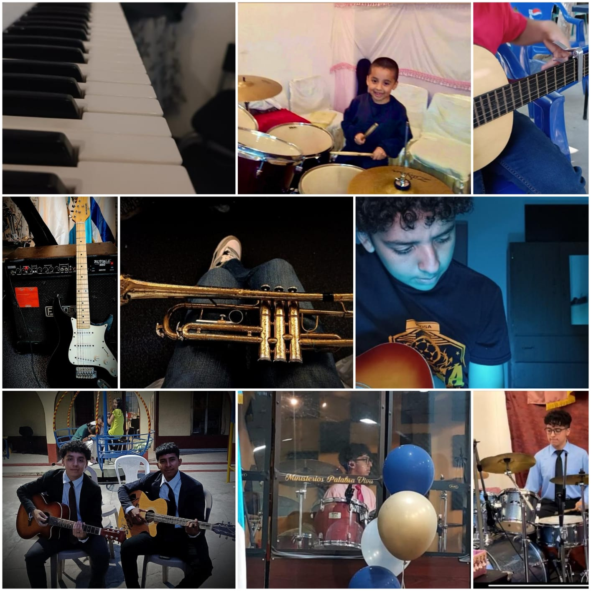

Guillermo Alexander Morales Figueroa
Mi nombre es Guillermo Alexander Morales Figueroa, actualmente tengo 19
años, todo comenzó cuando tenía ocho años, cuando mi corazón se llena de ilusión,
pude empezar a tocar un instrumento musical, entonces fue donde inculqué
mis pensamientos en lo que me gustaba, lo cual empezó con la batería,
desde ese entonces inició mi vida musical, luego seguí con el piano y así mismo
con otros instrumentos como la guitarra, el bajo, la trompeta y el acordeón,
nunca pensé llegar tan lejos… hasta que me lo propuse y pude avanzar, conocí
personas las cuales así como yo les enseñé, ellos me enseñaron muchas
cosas. Actualmente soy maestro de música, gracias a los conocimientos que adquirí con el
tiempo, pero estoy feliz, porque tocar un instrumento a la larga puede verse
dificultoso, pero con el tiempo aprendes y así aprendí,
poniendo empeño, sabiduría y disciplina en algo que tanto
amo, como lo es… la músicaSi deseas conocer más
sobre Guillermo, puedes escucharlo aquí
¡Espero que te guste!